This feature is still in beta and subject to constant change. We encourage you to use it in test projects and provide your feedback to us.
However, DO NOT use it in production where it creates dependencies! Always back up your projects to make sure that you can go back to a previous version.
Overview
Our Schematyc tool changes the way we build gameplay systems in CRYENGINE and gives Designers the power to construct new and reusable objects from a set of building blocks provided by Programmers. At first glance, the Schematyc Editor looks a little like Flow Graph, but the two systems have been built with very different purposes in mind. Whereas Flow Graph(s) are very good for level scripting, Schematyc is designed to provide a finite control of the objects within those levels.
Visual scripting tools let you script your own logic, while state machines help to break up and structure logic. Determinism and reduced latency make it possible to take new gameplay systems beyond the prototyping stage and without the need to rewrite them in C++.
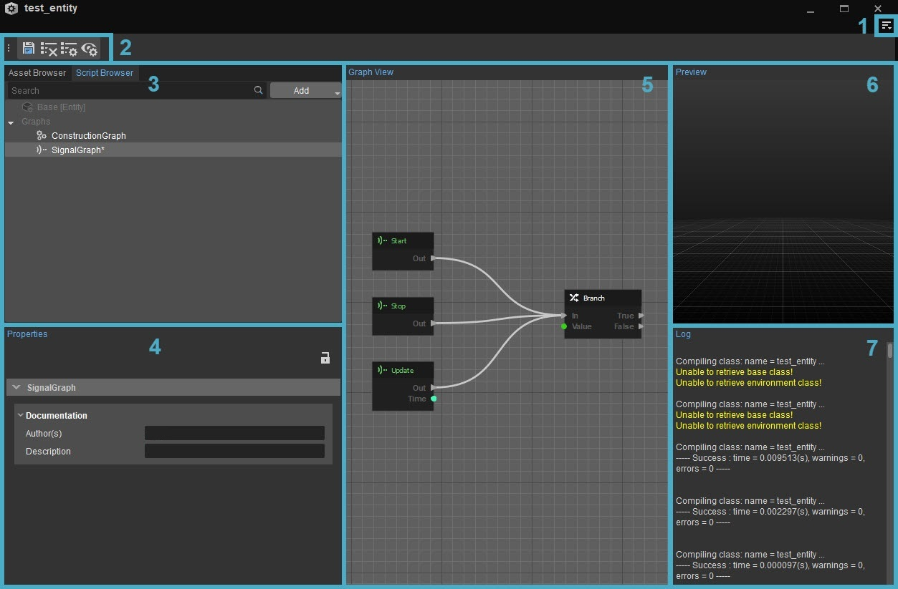
The Schematyc tool in CRYENGINE comprises of the following panels:
- Menu
- Toolbar
- Scripts Browser/Asset Browser
- Properties
- Graph View
- Preview
- Log
For more information on Schematyc's general concepts, please refer to Schematyc.
Menu
The Menu Bar contains the following options:
File
Option | Description |
|---|---|
New | Lets you create one of the following:
|
Open | Lets you open the Asset Browser to access the saved entity or library. |
| Close | Closes the current entity or library. |
Save | Saves the current project. |
Recent Files | Lets you access recent project files. |
Edit
Option | Description |
|---|---|
Undo (Ctrl+Z) | Undoes the last action. |
Redo (Ctrl+Y) | Redoes a previously undone action. |
Copy (Ctrl+C) | Copies selected node(s). |
Paste (Ctrl+Y) | Pastes the copied node(s) |
Toolbars
Option | Description | ||||
|---|---|---|---|---|---|
Customize... | Opens the toolbar customization window allowing users to customize existing toolbars, and/or create new toolbars within the Schematyc Editor. | ||||
Lock Toolbars | When disabled, the positions of toolbars and spacers within the Schematyc Editor can be changed by drag and drop. | ||||
Spacers | The following options allow users to use spacers in positioning their toolbars.
The Spacers menu options are only available when Toolbars → Lock Toolbars is disabled. | ||||
| Toolbars | Lists all default and custom toolbars created for the Schematyc Editor, allowing you to select which toolbar you'd like to hide or display. The default Schematyc Editor toolbars are as follows:
|
When a tool has a toolbar, whether this is a default one or a custom one, the options above are also available when right-clicking in the toolbar area (only when a toolbar is already displayed).
Window
Option | Description |
|---|---|
Panels | Lets you add the following panels to the Schematyc tool window:
|
Reset Layout | Resets the Editor layout to the default setting. |
Toolbar
Using the Toolbar menu, users can quickly and easily access many of the features of the Schematyc Editor through the icons at the top of the window.
Button | Name | Description |
|---|---|---|
Save All Changes | Lets you save any changes made. | |
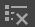 | Clear log output | |
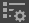 | Show log settings in properties panel | |
Show preview settings in preview panel | ||
Scripts Browser
Lets you add the following script types:
Option | Description |
|---|---|
Enumeration | Lets you add a new enumeration. |
Signals | Lets you add a new signal. |
Function | Lets you add a new graph function. |
State Machine | Lets you add a new state machine. |
Variable | Lets you add a new variable. |
Timer | Lets you add a new timer. |
Signal Receiver | Lets you add a new signal receiver. |
Component | Lets you add a new component. |
You can add any of the above options using the Add button in the Scripts Browser. You can use the Search field to search the script types in the Scripts Browser window.
Asset Browser
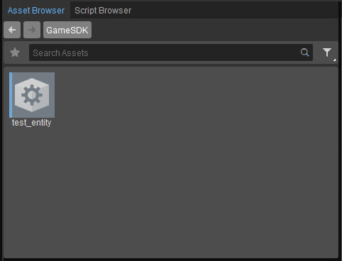
Tool-specific Asset Browser panels let users view and edit the assets within the tool that is currently being used. Unlike the stand-alone Asset Browser tool, the assets that are displayed on this panel are pre-filtered by default; meaning it only displays the assets that are relative to the tool itself.
Properties
The Properties panels vary depending on the type of script selected in the Script Browser. You can edit the properties of the following script options:
Enumeration
Enumeration lets you list a finite set of options with string identifiers.
- Constants: String identifier
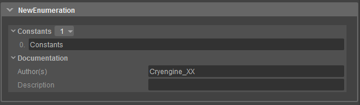
Below you can see an example of how such an enumeration could look. This example defines different types of damage.
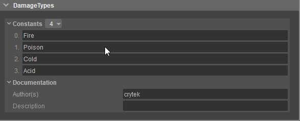
Signal
Signals are used to communicate between objects and object states, so for example, you could create a damage signal to send damage from one object to another. Signals can also be used to send data, so in the example of the damage signal you might add two variables; damage type and damage amount in order to specify the damage being delivered.
- Inputs: This defines how many inputs a signal has. Every input can have a string identifier and a type.
- Types: This defines the data type of the signal input.
- Standard: Represents all default types defined by Schematyc itself. All user defined types will be shown below the standard types.
- Resource: All supported resource types in Schematyc.
- Math: All math related types defined by Schematyc.
- Bool: Can be either true or false.
- String: Array of characters.
- Int32: Saves signed and unsigned integer.
- UInt32: Saves only unsigned integer.
- ObjectID: Unique internal Schematyc object identifier.
- EntityID: Unique entity identifier.
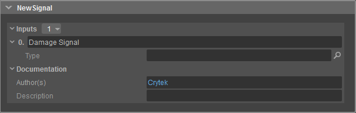
Below you can see an example of how a signal could look. This signal, as mentioned earlier, will inform other entities that they were damaged. We specify the type of damage and the amount of damage. If another entity receives this signal it knows what type of damage, how much damage and can react to that information.
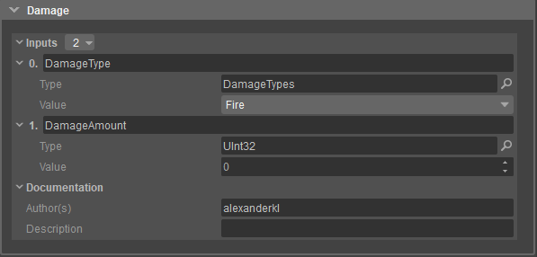
Below, you can see how a send signal node would look like in the graph view. As you can see it has all inputs we defined in the properties.
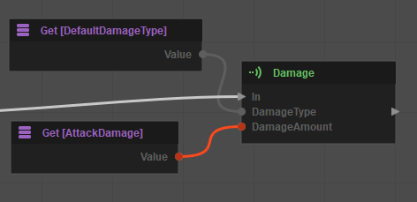
Function
Functions in Schematyc are just like functions in any other programming language. They pass input(s), the function performs some logic then an output is returned.
Input(s): Required input(s) by the function. Those data types can then be used inside the function.
Output(s): Data types the function returns after calling it.
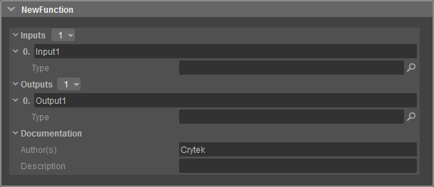
Below, you can see a simple example function definition. This function does nothing more than adding an integer and returning the result. As you can see the function takes two inputs, which are both integer values and returns the result as an integer as well. 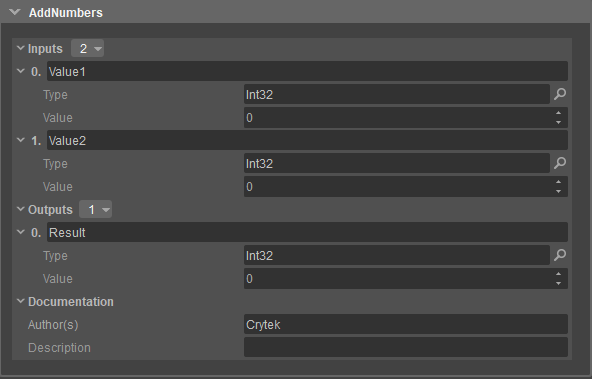
The Begin node defines the beginning of your function. This node contains all of your previously defined input data types, however the data of those data types will be set by the caller of your function. After you have performed your logic in the function, you can return/finish your function. Now you can return the result of your function or return nothing and just end the function.
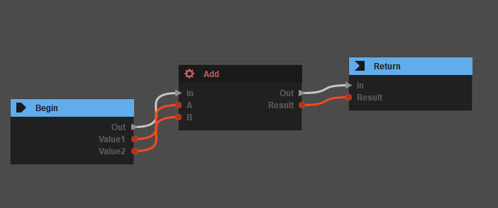
State Machine
A state machine, as the name suggests, is a construct to manage and pass states. A state machine can be used to handle complex orders of logic, for example a Non Player Character (NPC) behavior could be achieved in a state machine. Therefore, a state machine contains different states which can be added by right clicking on the state machine.
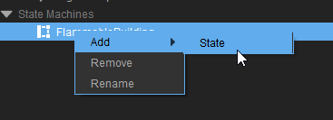
Every State has its own signal graph and gets the same default signal (start, update, end). When this State gets triggered, then the Start signal will be sent and as long as this state is active then the update signal will be called on every frame. Of course when the state ends, then the End signal will be sent.
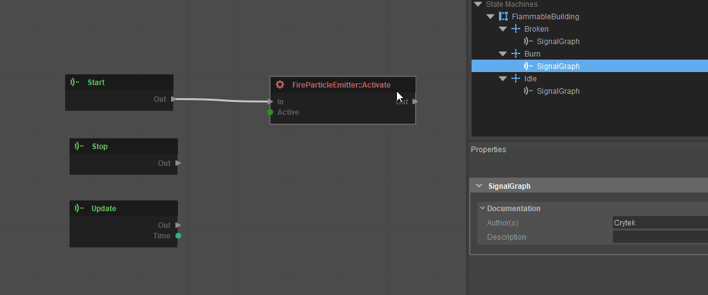
To setup the general order or behavior of the states you can click directly on the state machine. In this graph, you can add your states and logic to trigger the different states. In the example shown below you can see how a simple state machine could look. The Begin node will call the Idle state when the game starts. If the entity gets the "Entering" signal then it will go to the next state "Burn" and if/once the "BurnTimer" is over, it will go into the "Broken" state and will stay there for the rest of the game.
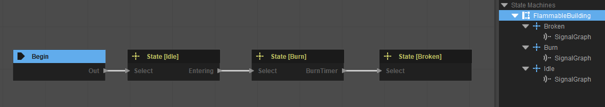
Variable
Variables are a way to store specific information. The variable consists of three options that you can choose after adding it to your entity.
Option | Description |
|---|---|
Type | Lets you define the type of variable. Depending on the type you choose you can enter the value below the Public option. |
Array | Lets you define if this variable should be an array or not. |
Public | Lets you define if you can change this variable in the component inspector in your level. |
The variable can now be used in the signal graph to describe a certain attribute of your entity. For example you could have a variable called "Damage" which would contain the information of how much damage this entity inflicts.
Example of a variable definition.
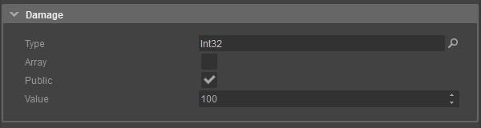
An example of how a variable can be used in the graph. The "DoDamage" function takes an int32 value and we get the variable we already have declared.
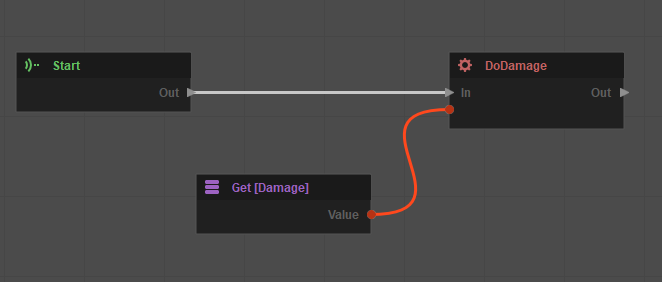
If the public option is active, then you can edit the variables under the "Schematyc Variables" property.
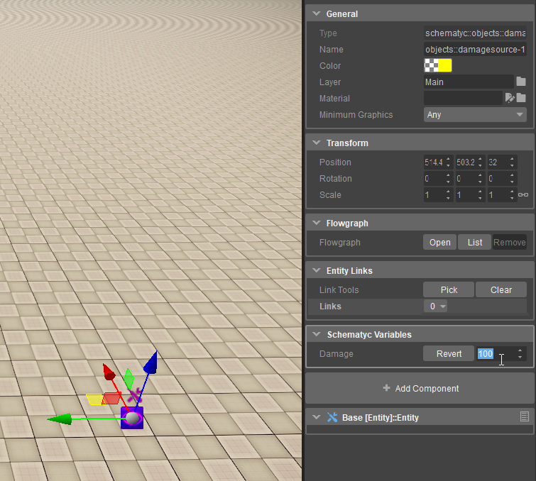
Timer
A timer has a limited number of units and will count those units down. Once the 'number of units' has passed, then it will trigger a signal.
Option | Description |
|---|---|
Units | Lets you decide which type of units the timer should count down. |
Duration | Lets you set a number of units that will be set for the count down. |
Auto Start | Lets you decide if the timer should start directly and doesn't have to be triggered. |
Repeat | Lets you decide if the timer should repeat. |
Signal Receiver
The Signal Receiver is just a new signal graph and this graph can do the same things as the default signal graph of your entity. This can be used to organize and structure your logic, for example if you have a rather complex logic (after a certain signal is triggered) and you don't want to put everything into the default signal graph. So to keep the setup clean and structured you can create a new Signal Receiver for just this specific logic.
Component
Components are containers for a specific logic or functionality. The components that you can add here are the same as in the Sandbox Editor with the "Add Component" button. There are already some predefined components from CryEngine by default, for example, you can find the components for input, lighting, physics, geometry and more. You can also search for a component in the search line. If you have created your own components in C# or C++, they should be on the list and you can add them to your Schematyc entity and use the logic you exposed to Schematyc. For more information about components and what they can do, refer to Entity Components.
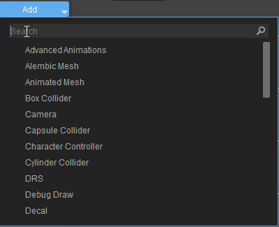
Once you have added a component you can see the component in the components list for your entity. All entity components will be on that list and can be removed or renamed here. A lot of those components have their own properties which can be edited in the properties panel after clicking on them.
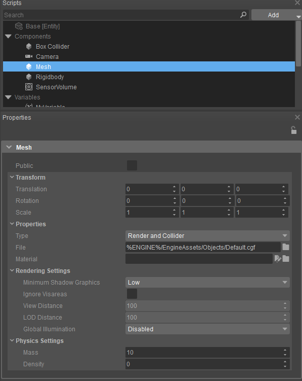
After adding your components you should also be able to use the functions they expose. Those functions should be in your function list and can be used in the signal graph. The component can also expose signals and other functionality in Schematyc.
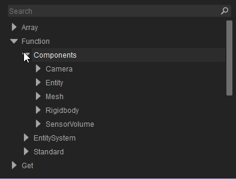
Graph View
Shows a graphical representation of the entities and lets you add nodes to a function. Schematyc introduces the concept of a transition graph. This is where we control how and when you switch from one state to another. Note: It is impossible to trigger transitions from anywhere else and while this may not seem quite as convenient as simply being able to link up a 'switch state' node, it does make it much easier to view the overall picture and track down issues when designs become more complex.
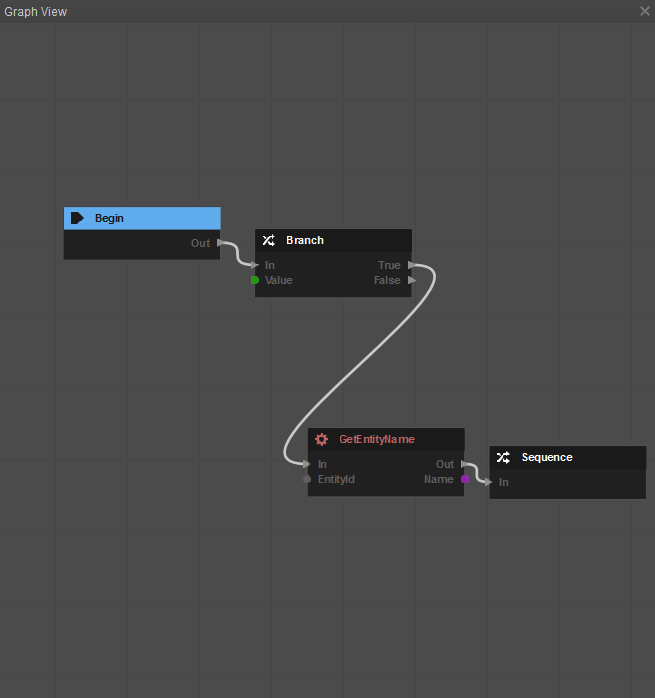
Preview
Provides a preview for the newly created Schematyc entity.
Preview Settings
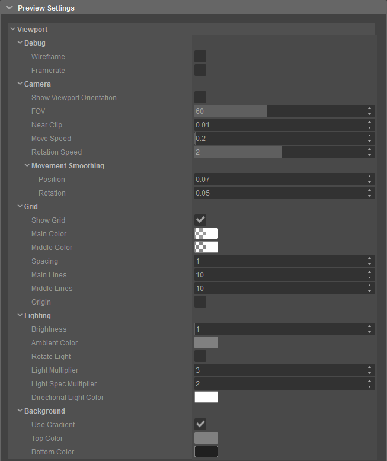
Options | Description |
|---|---|
Debug | |
Wireframe | Lets you draw the object in wireframe mode. |
Frame Rate | Lets you display the frame rate of the preview window. |
Camera | |
Show Viewport orientation | Lets you display an orientation helper in the left-hand corner. |
FOV | Lets you change the Field of View. |
Near Clip | Lets you set the distance in which geometry gets the clip in front of the camera. |
Move Speed | Lets you adjust the movement speed of the camera throughout the scene. |
Rotation Speed | Lets you alter the rotation speed of the camera. |
Movement Smoothing |
|
Grid | |
Show Grid | Lets you disable or enable the grid. |
Main Color | Lets you change the color of the main grid lines. |
Middle Color | Lets you change the color of the smaller grid lines. |
Spacing | Lets you change the size of the space between the lines. |
Main Lines | Lets you change the radius in which the main lines will be drawn. |
Middle Lines | Lets you change the radius in which the middle lines will be drawn. |
Origin | Lets you display a helper in the origin of the grid. |
Lighting | |
Brightness | Lets you change the brightness of the light. |
Ambient Color | Lets you change the color of the ambient light. |
Rotate Light | Lets you rotate the light slowly around the object. |
Light Multiplier | Lets you modify the multiplier of the light color. |
Light Spec Multiplier | Lets you modify the multiplier of the light specular color. |
Directional Light Color | Lets you change the color of the directional light. |
Background | |
Use Gradient | Lets you enable or disable the gradient. |
Top Color | Lets you change the color of the top part of the gradient. If the gradient is deactivated this will be the color of the whole background. |
Bottom Color | Lets you change the color of the bottom part of the gradient. This will only work if the gradient is active. |
Log
Lets you view the logs within the Schematyc tool.
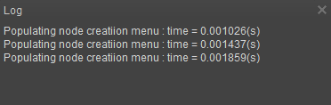
Log Settings
You can sort the log information based on the values assigned in the Log Settings.
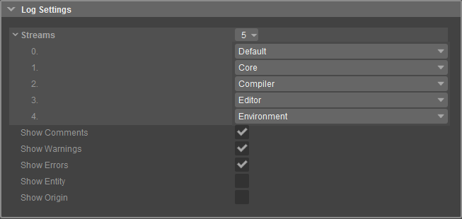
Options | Description |
|---|---|
Streams | Lets you sort the log details based on the options below:
|
Show Comments | Enables or disables comments in the log. Comments can be logged with the "Comment" node. |
Show Warnings | Enables or disables warnings in the log. Warnings can be logged with the "Warning" node. |
Show Errors | Enables or disables errors in the log. Errors can be logged with the "Errors" node. |
Show Entity | If enabled, shows the name of the entity from which the message originates. |
Show Origin | If enabled, shows the name of the function from which the message originates. |
On This Page